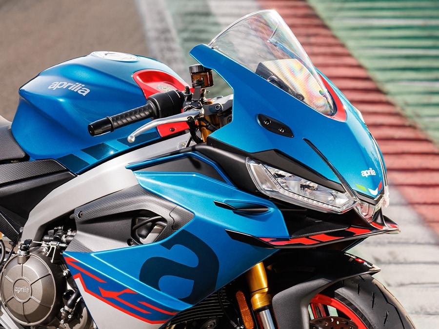

Aprilia RSV4 Factory

La RSV4 Factory è la superbike per eccellenza, dotata del miglior
pacchetto elettronico disponibile sul mercato. Con il suo motore V4 da 1099cc,
questa moto rappresenta il top delle prestazioni in ambito stradale e racing.
Caratteristiche Tecniche
| Caratteristica |
Specifica |
| Motore |
V4 65° - 1099 cc |
| Potenza massima |
217 CV @ 13.000 rpm |
| Coppia massima |
125 Nm @ 10.500 rpm |
| Peso a secco |
199 kg |
| Velocità massima |
305 km/h |
| Prezzo di listino |
€ 29.900 |
Aprilia Tuono V4 Factory

La Tuono V4 è la naked sportiva che eredita tutta la tecnologia
e le prestazioni della RSV4. Considerata da molti la migliore naked al mondo,
offre un'esperienza di guida unica.
Caratteristiche Tecniche
| Caratteristica |
Specifica |
| Motore |
V4 65° - 1099 cc |
| Potenza massima |
175 CV @ 11.500 rpm |
| Coppia massima |
121 Nm @ 9.000 rpm |
| Peso a secco |
209 kg |
| Velocità massima |
280 km/h |
| Prezzo di listino |
€ 24.900 |
Aprilia RS 660

La RS 660 è la sportiva media che ha ridefinito la categoria.
Con il suo motore bicilindrico parallelo da 660cc derivato dal V4, offre
prestazioni brillanti e un peso contenuto.
Caratteristiche Tecniche
| Caratteristica |
Specifica |
| Motore |
Bicilindrico parallelo - 659 cc |
| Potenza massima |
100 CV @ 10.500 rpm |
| Coppia massima |
67 Nm @ 8.500 rpm |
| Peso a secco |
183 kg |
| Velocità massima |
240 km/h |
| Prezzo di listino |
€ 12.900 |
Confronta i Modelli
Ecco un confronto rapido tra i nostri modelli principali:
Per Categoria di Utilizzo
- Pista e Competizioni: RSV4 Factory - massime prestazioni
- Strada e Divertimento: Tuono V4 - versatilità totale
- Uso Quotidiano Sportivo: RS 660 - perfetto equilibrio
Ordine di Potenza
- RSV4 Factory - 217 CV
- Tuono V4 Factory - 175 CV
- RS 660 - 100 CV